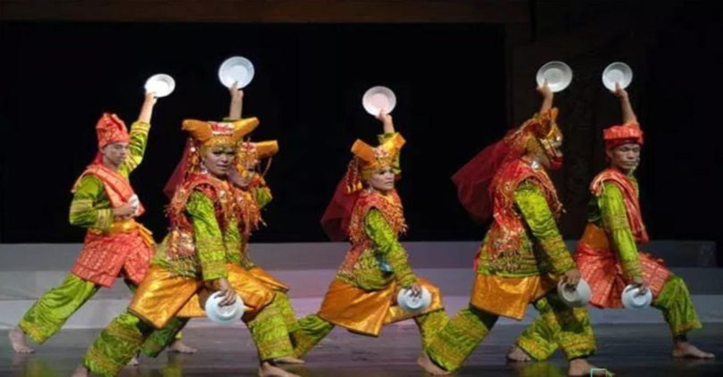

Pulau Sumatera: terletak di barat laut Indonesia merupakan salah satu pulau terbesar dan terpadat penduduknya di Indonesia. Pulau ini memiliki beragam lanskap yang mencakup pegunungan, dataran rendah, dan pesisir yang indah. Gunung Kerinci, salah satu gunung tertinggi di Indonesia, terletak di Sumatera, serta Taman Nasional Gunung Leuser yang terkenal dengan keanekaragaman hayati dan habitat orangutan. Sumatera juga kaya akan sumber daya alam, seperti minyak bumi, gas alam, batu bara, karet, dan kelapa sawit, yang menjadi tulang punggung ekonomi pulau ini. Selain itu, Sumatera memiliki kekayaan budaya yang kaya, dengan beragam suku dan bahasa, seperti Batak, Minangkabau, Aceh, dan Lampung, masing-masing memiliki tradisi, adat istiadat, dan seni yang unik. Pulau Sumatera juga memiliki objek wisata menarik seperti Danau Toba, Pantai Padang, Bukittinggi, dan Pulau Weh yang menarik wisatawan untuk menikmati keindahan alam dan budaya yang berbeda-beda.

Adat Pernikahan Sumatera

Upacara Kematian

Upacara Kelahiran

Tari Saman
Tari Piring

Batik Sumatera